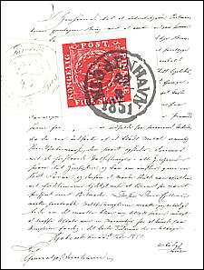
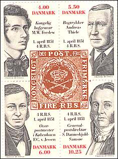

Philatelic Research — Articles by PWO Members
Original philatelic contributions by PWO members. Historical texts and illustrations are preserved.
Research articles
We start here with the publishing of articles on philatelic subjects, sent to us by our members. All PWO members are invited to submit their entries and/or their comments. Thanks in advance!
Stamp at an Exhibition
by Ann Mette Heindorff, DK
Tip: to be read with a piano music in background, like "Paintings at an Exhibition" - by Modest Musorgski
It was on a nice day in October when I woke up and immediately remembered that this will be a very special day in my life. A special one not only because it was my birthday anniversary, but also because I decided a long time ago to offer myself a nice present.
That's why I sprung out from my bed and two hours later I was already at HAFNIA 01 philatelic exhibition in Copenhagen, the first big and international exhibition of this millennium, patronized by the Danish Philatelic Federation and the FIP, and dedicated to the 150th anniversary of our first postal stamp. An exhibition for which the general advertising had been enormous, so I had good reasons to think that this time I will offer to myself something "different", or at least a bit more than in the usual stamp exhibitions.
I was so excited and in high spirits that I have hardly noticed that at the entry the window clerk could not give small change for a 100 DKR - banknote to pay for 2 adults with 30 DKR. The clerk looked angry and asked me to bring correct money in coins, so I asked her where I could change, what she simply didn't know. No problem, nobody can bring me out off my concept, so I slipped through the counter via the Press Room.
The exhibition was held in the Bella Center in southern Copenhagen, close to the airport. The exhibition building is enormous, and it certainly takes something not to disappear totally, but certainly not for me, who was at home here. The general level of information was quite low, but I had the privilege of being a Dane, in my country, and I could also get access to the Internet. At least on the place free catalogues with floor plans were available, even if with little information - or none at all - about the exhibition's activities. But even as Dane I was held away from visits by notabilities, because at such moments it was a closed exhibition.

OK, let's go to the boots of the postal administrations and see what have they brought. Here another surprise, that started by annoying me. Oh no, they had "forgotten" to bring enough material with them for sale, so a lot of actual material, such as FDCs and souvenir sheets, made for the benefit of the exhibition, were simply not available. No time for tears anymore, let's see what is waiting on me in the next rooms.
Not bad at all, because finally I started to realize that the exhibition was planned as a family event (during the autumn holidays) rather than an international world exhibition of stamps. A lot of families had brought their extremely noisy offspring, who were playing around on the huge playgrounds, without caring a bit for stamps. And their parents and other relatives were occupied at the bar for draft beer, rather than looking at stamps, so that everybody has found something for his own happiness.
People, whom I was supposed to meet there, had disappeared, or at least didn't show up for the meetings, probably taken by the waves of children and drinks. The information desk was rather un-informative and un-knowing of where people could be found.
So I tried to socialize a bit differently as I have foreseen it, so I spoke to some dealers whom I personally know for a quite long time. Here at least I could speak about stamps. Being polite by nature, I have asked them how the sales were. "Close to nothing" was the general answer, when I could hear it in the children's noise.

Visiting the physical exhibitions was my next step. Insects, garden flowers, and motor bikes seemed to be the prevailing subject of the open class. Stamp 1, stamp 2, stamp 3, etc., one after another, with poor write-ups. But at least some stamps, anyway.
The four-blocks signed by the engraver was a challenging activity for those who were interested, and I was one of them for sure. Czeslaw Slania's (the most renown stamps engraver of our times) 80th birthday engraving was presented at the exhibition, but was not for sale before his birthday which happened to fall on the day AFTER the exhibition's closure!!! So Mr. Slania couldn't even sign his own birthday engraving for the hundreds of visitors that would have wanted it. All he could do was to sign earlier stamps, sheets and FDC's, all issued 10 years ago ...
Personally I have more or less achieved what I wanted on the exhibition, but I wondered what serious non-computerized collectors are thinking of an exhibition of such a level of public information. So I have spoken to other visitors, and they have quite uniformly answered "cheated, it wasn't worth our time and money". I understand them, because not all had their birthday on that day and they weren't willing to take the things as they came. Possible the staff has had a great time in meeting each other (again), but to put it mildly, for many people it wasn't a personal enrichment to visit the exhibition. But again, personally I cannot complain, it was a special day in my life and I feel less regrets now that I will not be able to visit the HAFNIA 51 universal exhibition.
Last but not least, to all this comes the disaster of the Hafniade - the virtual Web sites exhibition at Hafnia 01 - which will for sure be dealt with by other PWO members, as much involved in it and as much happy as I was and still am in what concerns this particular subject.
|
Published: 10/28/2001. Revised: 10/28/01
. Copyright © 2001 by PWO and by Victor Manta, Switzerland. All rights reserved worldwide. |